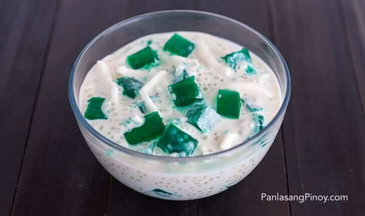

Buko Pandan Salad

Description
Buko Pandan is a popular Filipino Dessert made using young coconut, pandan
leaves (or Screwpine leaves), and sago pearls. At first glance, this
dessert dish can be mistaken for Buko Salad. Both desserts are almost
similar visually.
Ingredients
- 1 pack (25g) unflavored green gulaman
- 1 pack (25g) unflavored white gulaman
- 1 cup shredded young coconut meat
- 1 can (325ml) Nestle thick cream, chilled overnight
- 1 can (300ml) condensed milk, chilled overnight
- 1/2 cup sugar
- 4 cups water
- 1/2 cup sago
- 1/2 tsp pandan extract
- 1/2 tsp buko pandan flavor
Steps
- Combine water and powdered gelatin then stir using a spoon.
-
Add Buko Pandan flavoring then stir until everything is evenly
distributed.
-
Heat a saucepan and pour-in the mixture. Bring to a boil while
continuously stirring.
-
Turn off the heat and transfer the mixture to a mold. Allow the
temperature to cool. The texture of the mixture should be firm once
cooled. You may also place this inside the refrigerator for faster
results (allow the temperature to go down before putting-in the
refrigerator).
-
Combine condensed milk, table cream, sago pearls, and young coconut then
mix well. Allow the texture to thicken by chilling in the refrigerator
or freezer for a few hours.
-
Slice the firm gelatin into 1 inch cubes then combine with the condensed
milk-cream-young coconut-sago mixture.
-
Transfer to individual serving platters or cups then top with a scoop of
vanilla ice-cream.
- Serve for dessert. Share and enjoy!